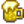

Pam
| Pam | |
 | |
| Information
| |
| Geburtstag | |
| Lebt in | Pelikan Stadt |
| Adresse | Wohnwagen |
| Familie |
|
| Ehe | Nein |
| Klinikbesuch | |
| Beste Geschenke |  Bier |
| “ | “Ich habe heute Morgen die Zeitung gelesen und wurde deprimiert. Wir leben in 'ner Scheißwelt, Kind. Setze deine Birne ein und du wirst unbeschadet durchkommen... Das hat mein Papa immer gesagt. Heh heh heh.” |
| — Pam |
Pam ist eine Dorfbewohnerin, die im Wohnwagen neben dem Fluss in Pelikan Stadt lebt. Sie war die Fahrerin des Pelikan Stadt Buses, bevor er kaputt ging. Sobald das Tresor-Bündel abgeschlossen ist, wird Pam die Bushaltestelle östlich des Hofes übernehmen.
Die meisten Tage kann man Pam bis 12:00 Uhr in ihrem Wohnwagen finden. Dann wird sie für ein paar Stunden im Joja-Markt sein und geht um 16:00 Uhr zur Kneipe zum Sternenfall. Pam ist eine von Gus' loyalsten Besuchern; sie verbringt jeden Abend in seinem Etablissement.
Pam hat ihren Arzttermin am 25. Frühling, Dadurch kannst du an diesem Tag nicht in die Wüste fahren.
Tagesablauf
| Regulärer Tagesablauf (Ohne Bushaltestelle oder bei Regen) | |
|---|---|
| 08.00 Uhr | Faulenzt auf der Couch im Wohnwagen. |
| 12.00 Uhr | Verlässt den Wohnwagen und macht sich auf den Weg zum Joja-Markt. |
| 16.00 Uhr | Verlässt den Joja-Markt und begibt sich zur Kneipe. |
| 00.00 Uhr | Verlässt die Kneipe und geht nach Hause. |
| Regulärer Tagesablauf (Mit Bushaltestelle) | |
|---|---|
| 08.00 Uhr | Faulenzt auf der Couch im Wohnwagen. |
| 08.30 Uhr | Verlässt den Wohnwagen, um zur Bushaltestelle östlich des Hofes zu gehen. |
| 10.00 Uhr | Kommt an der Bushaltestelle an. |
| 17.00 Uhr | Verlässt die Bushaltestelle und begibt sich zur Kneipe. |
| 00.00 Uhr | Verlässt die Kneipe und geht nach Hause. |
| Abweichungen | ||||||||||||
|---|---|---|---|---|---|---|---|---|---|---|---|---|
|
25. Frühling
|
Beziehungen
Pam lebt mit ihrer Tochter Penny zusammen. Sie bietet jeden Abend etwas Geselligkeit in der Kneipe zum Sternenfall.
Geschenke
- Hauptartikel: Freundschaft
- Siehe auch: Liste aller Geschenke
Du kannst Pam bis zu zwei Geschenke pro Woche geben (plus eines an
ihrem
Geburtstag), die deine Freundschaft mit
ihr
erhöht oder senkt. Geschenke zu
ihrem
Geburtstag ( 18 Frühling) haben 8-fache Wirkung und lösen einen einzigartigen Dialog aus.
18 Frühling) haben 8-fache Wirkung und lösen einen einzigartigen Dialog aus.
Bei beliebten oder gemochten Geschenken wird Pam sagen
| “ | “Du hast dich an meinen Geburtstag erinnert? Ich bin beeindruckt. Danke.” |
| “ | “Oh, ist heute mein Geburtstag? Stimmt wohl. Danke. Das ist nett.” |
Bei neutralen Geschenken wird Pam sagen
| “ | “Für meinen Geburtstag? Danke.” |
Bei unbeliebten oder gehaßten Geschenken wird Pam sagen
| “ | “Heute ist mein Geburtstag und du gibst mir das? Ist das eine Art Witz?” |
Liebt
| “ | “Hey, hey! Also, das ist mal wirklich was! Tausend Dank, Kindchen.” |
| Bild | Name | Beschreibung | Quelle | Zutaten |
|---|---|---|---|---|
| ||||
| Bier | In Maßen genießen. | Fass, Kneipe zum Sternenfall | ||
| Kaktus-Frucht | Die süße Frucht einer stachligen Kaktusfeige. | Sammeln - Calico-Wüste | ||
| Glasierte Süßkartoffeln | Süß und sättigend... Der Zucker gibt dem Ganzen einen Hauch von Karamell. | Kochen | ||
| Met | Gegärtes Getränk aus Honig. In Maßen trinken. | Fass | ||
| Helles Bier | In Maßen genießen. | Fass | ||
| Pastinake | Eine Frühlingsknolle, die eng mit der Karotte verwandt ist. Sie hat einen erdigen Geschmack und ist voller Nährstoffe. | Hofarbeit - Frühling | ||
| Pastinakensuppe | Sie ist herzhaft und frisch. | Kochen | ||
| Piña Colada | Getränk in Maßen genießen. | Ingwerinsel | ||
Mag
| “ | “Da hast du echt was Gutes geleistet, Kindchen. Danke!” |
| Bild | Name | Beschreibung | Quelle |
|---|---|---|---|
| |||
| Narzisse | Eine traditionelle Frühlingsblume, die ein nettes Geschenk abgibt. | Sammeln - Frühling | |
Neutral
| “ | “Danke, Kindchen.” |
| Bild | Name | Beschreibung | Quelle |
|---|---|---|---|
| |||
| Pfifferling | Ein leckerer Pilz mit fruchtigem Duft und leicht pfeffrigem Geschmack. | Sammeln - Herbst | |
| Gewöhnlicher Pilz | Leicht nussig und von guter Konsistenz. | Sammeln - Herbst | |
| Löwenzahn | Nicht die schönste Blume, aber die Blätter geben einen guten Salat ab. | Sammeln - Frühling | |
| Haselnuss | Das ist eine große Haselnuss! | Sammeln - Herbst | |
| Lauch | Ein leckerer Verwandter der Zwiebel. | Sammeln - Frühling | |
| Morchel | Begehrt für ihren einzigartigen, nussigen Geschmack. | Sammeln - Frühling | |
| Violetter Pilz | Ein seltener Pilz, der tief in den Höhlen zu finden ist. | Sammeln - Minen | |
| Schnee-Süßkartoffel | Diese kleine Süßkartoffel hat sich unter dem Schnee versteckt. | Sammeln - Winter | |
| Winterwurzel | Eine stärkehaltige Knolle. | Sammeln - Winter | |
Mag Nicht
| “ | “Das ist nicht so meins.” |
| Bild | Name | Beschreibung | Quelle |
|---|---|---|---|
| |||
| Quarz | Ein klarer Kristall, der häufig in Höhlen und Minen gefunden wird. | Sammeln - Minen | |
| Wilder Meerrettich | Würzige Wurzeln, die im Frühling gefunden werden können. | Sammeln - Frühling | |
Hasst
| “ | “Das ist einfach nur abscheulich. (Ist das irgendein fieser Witz?)” |
| Bild | Name | Beschreibung | Quelle |
|---|---|---|---|
| |||
| Stechpalme | Die Blätter und grellroten Beeren sind eine beliebte Winterdekoration. | Sammeln - Winter | |
| Oktopus | Eine mysteriöse und intelligente Kreatur. | Fischen | |
| Tintenfisch | Eine Tiefseekreatur, die zu enormen Größen heranwachsen kann. | Fischen | |
Filme und Snacks
- Hauptartikel: Kino
|
|
Herz Events
Jederzeit
Auf jeder Freundschaft Stufe größer als null Freundschaftspunkte kann man ein Geschenk von Pam per Post erhalten. Die Chance, ein Geschenk in der Post zu erhalten, steigt mit zunehmender Freundschaft mit Pam.
| Details | ||||
|---|---|---|---|---|
|
Drei Herzen

Nach Erreichen von 3 Herzen, wird Pam Dir ein Rezept mit der Post schicken. Außerdem beginnt sie damit, Dir Gegenstände zu schicken.
| Details | |||||||||||||
|---|---|---|---|---|---|---|---|---|---|---|---|---|---|
|
Sieben Herzen

Nach Erreichen von 7 Herzen, wird Pam Dir ein Rezept mit der Post schicken.
| Details | ||||||
|---|---|---|---|---|---|---|
|
Neun Herzen

Kaufe die "Gemeinschaftsverbesserung" im Schreinerladen. Nachdem man mindestens 9 Herzen mit Pam hat, betritt Pam's Haus mindestens 4 Tage nach dem Fertigstellen der "Gemeinschaftsverbesserung".
| Details |
|---|
| Du findest Pam betend vor einer Zeichen der Gefäßen-Statue. Sie gesteht, dass sie das neue Haus liebt, aber sie konnte ihren Alkoholkonsum nicht einschränken. Sie sagt, sie dachte, das neue Haus würde alles verändern, aber das hat es nicht, also hat sie die Statue bestellt. Dann wendet sie sich an den Spieler, um eine Antwort zu erhalten.
Ich bin froh, dass du dir Hoffnungen machst. (Keine Wirkung auf Freundschaft.) Pam sagt, sie wird im Alter "rührselig", und die Videosequenz endet. Entschuldige Pam, aber Yoba ist nicht real... (-1000 Freundschaft.) Pam wird wütend und bekennt sich zu Yoba, bevor sie dir befiehlt, zu gehen. |
Dialog
Arztbesuch
Wartezimmer
| “ | “*grummel*... Doktor Besserwisser... *grummel*” |
Untersuchungszimmer
| “ | “Wie viel trinken Sie? Was ist das den bitte für eine Frage?” |
Aufträge
- "Pam ist durstig": Pam schickt am 14 Sommer einen Brief, in dem sie um Helles Bier bittet. Die Belohnung ist
 350 G und 1 Freundschaftsherz.
350 G und 1 Freundschaftsherz. - "Pam braucht Saft": Pam schickt am 19 Herbst des zweiten Jahres einen Brief, in dem Sie um eine Batterie bittet. Die Belohnung ist 400 G und 1 Freundschaftsherz.
- Pam kann darum bitten, dass du ihr einen zufälligen Gegenstand auf dem Schwarzen Brett außerhalb von Pierres Gemischtwarenladen bringst. Die Belohnung für das Ausfüllen einer Artikelauslieferungsanforderung beträgt das Dreifache des Basiswertes des Artikels und 150 Freundschaftspunkte.
Portraits


Trivia
- In v1.3 folgt dir Pam nicht mehr in den Bus, wenn du ein Ticket für die Wüste kaufst. Stattdessen bleibt sie an Ort und Stelle, bis die Bus-Schnittszene ausgelöst wird. Dies mag getan worden sein, um den seltenen "verschwundene Pam"-Bug zu verhindern, bei dem Pam aus dem Spiel verschwindet und nie wieder zurückkehrt.
- An Sonntagen im Herbst sagt Pam vielleicht: "Ich vermisse meinen alten Job als Lkw-Fahrer. Ich fuhr durchs ganze Tal, traf Leute, hörte Radio. Die Zeiten haben sich geändert."
Geschichte
- 1.3: 9-Herzen Event hinzugefügt. Bushaltestellen-Animation verändert.
- 1.4: Fehler behoben, bei dem alle Rezepte bei 3 Freundschaftsherzen verschickt wurden.
| Dorfbewohner | |
|---|---|
| Junggesellen | Alex • Elliott • Harvey • Sam • Sebastian • Shane |
| Junggesellinnen | Abigail • Emily • Haley • Leah • Maru • Penny |
| Stadtbewohner | Caroline • Clint • Demetrius • Evelyn • George • Gil • Gunther • Gus • Jas • Jodi • Kent • Lewis • Linus • Marlon • Marnie • Morris • Pam • Pierre • Robin • Vincent • Willy |
| Andere | Alter Seemann • Birdie • Gefolgsmann • Gouverneur • Junimos • Krobus • Leo • Mr. Qi • Opa • Professor Schnecke • Sandy • Türsteher • Zauberer • Zwerg |